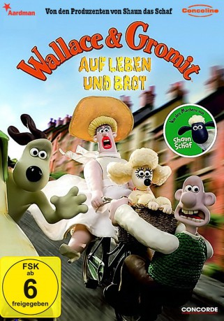

#1724 Wallace & Gromit - Auf Leben und Brot
Alternativ: A Matter of Loaf and Death
Auszeichnungen: für 1 Oscars nominiert 1 BAFTA-Awards gewonnen
 
 IMDB-Wertung: 7.6 / 10
IMDB-Wertung: 7.6 / 10  Metascore: 0
Metascore: 0 
Wallace und sein Hund Gromit eröffnen eine Bäckerei. Kurz darauf werden sie in eine Mordserie verwickelt. Als Wallace sich Hals über Kopf verliebt, behält allein Gromit einen klaren Kopf und muss den Fall von nun an allein lösen. Der kluge Vierbeiner setzt alle Hebel in Bewegung, den Täter zur Strecke bringen. Da gerät auch Wallace in höchste Gefahr...
Jahr: 2008
Dauer: 30 Minuten
FSK:
Land: England Studio: BBCTonspuren:
Untertitel:
Auflösung: 1080p (1920x1080) Größe: 1310 MB
Genre: Animation/Trick, Kurzfilm, Komödie, Krimi, Familie
Regisseur:  Nick Park
Nick Park
Drehbuch: Nick Park, Bob Baker
Soundtrack: Julian Nott
Darsteller:
- Peter Sallis als Wallace
- Melissa Collier als Fluffles
 Geraldine McEwan als Miss Thripp , uncredited
Geraldine McEwan als Miss Thripp , uncredited- Sally Lindsay als Piella Bakewell
- Sarah Laborde als Bake O Lite Singer
- Ben Whitehead als Bob the Baker , uncredited
Datei: X:\Kinder Collections\Wallace & Gromit\Wallace & Gromit - Auf Leben und Brot (2008, FSK, 1920x1080).mkv seit 10.08.2015
Festplatte: Kinder-Filme+Trick
 Es gibt insgesamt 10 Filme in der Gruppe 'Kinder Collections\Wallace & Gromit'
Es gibt insgesamt 10 Filme in der Gruppe 'Kinder Collections\Wallace & Gromit'